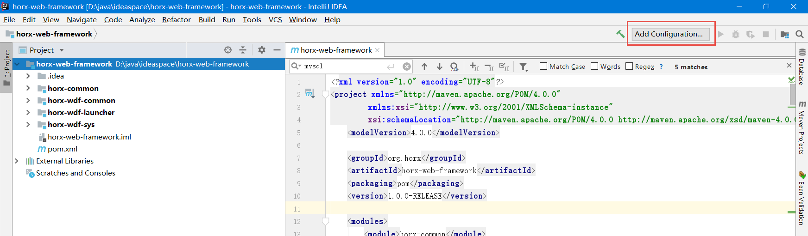
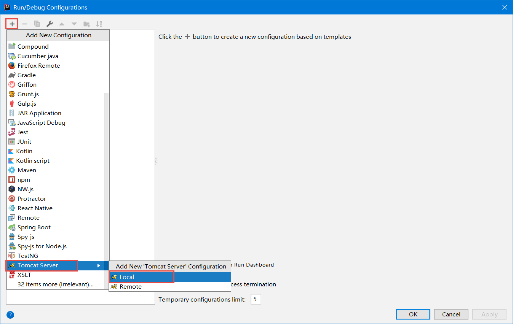
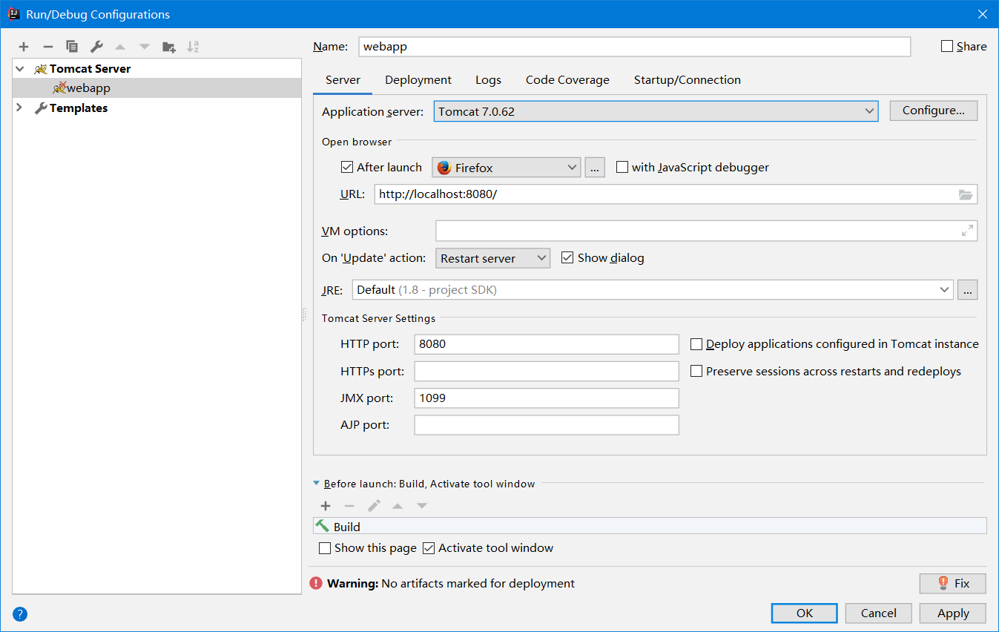
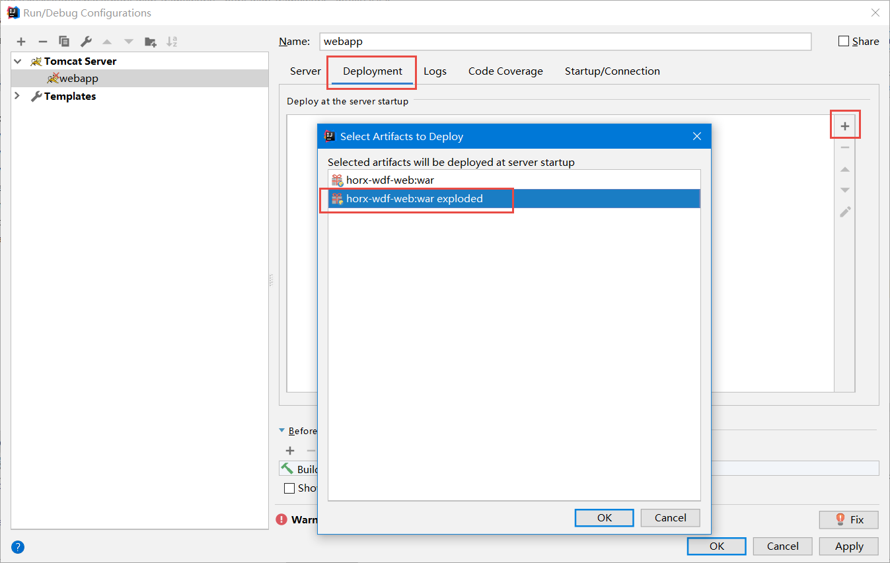
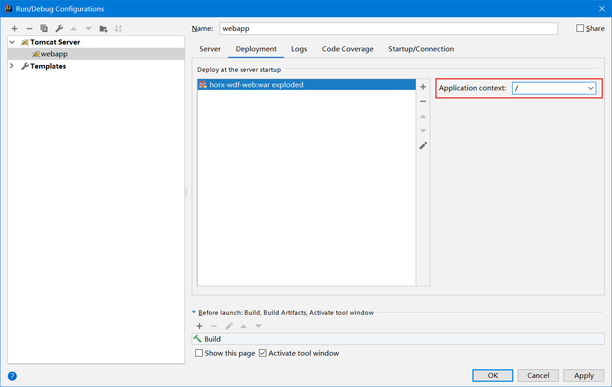
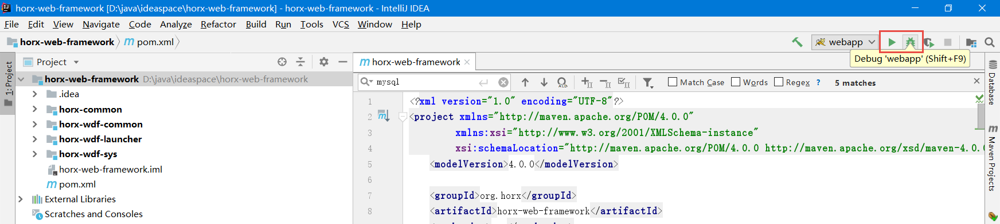
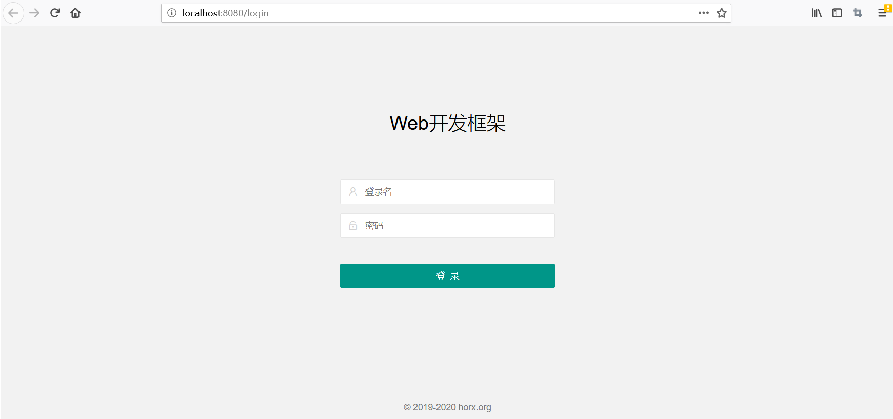
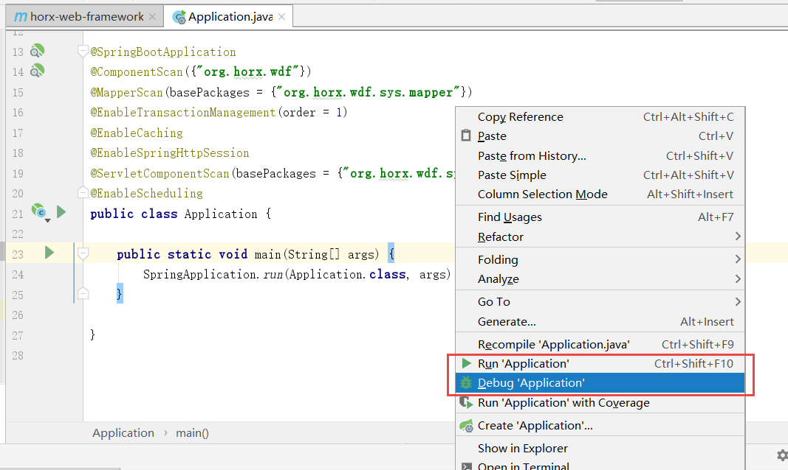

准备数据库
执行sql文件夹下对应数据库类型中的wdf-sys-ddl.sql、wdf-sys-dml.sql文件，完成数据库建表和数据初始化。
修改数据库连接
webapp
第一处：加载JDBC驱动
加载MySQL JDBC驱动：
<dependency>
<groupId>mysql</groupId>
<artifactId>mysql-connector-java</artifactId>
<version>8.0.16</version>
</dependency>Oracle数据库JDBC驱动需要自行加载，接在把jdbc包放到lib下，或者通过Maven的方式加载（需要自己把Oracle JDBC驱动放到Maven私服）。
加载H2 JDBC驱动：
<dependency>
<groupId>com.h2database</groupId>
<artifactId>h2</artifactId>
<version>1.4.200</version>
</dependency>第二处：horx-wdf-web下src/main/resources/config/jdbc.properties（war包或者已部署的应用，则是WEB-INF/classes/config/jdbc.properties）
MySQL数据库连接参考：
dataSource.driverClassName=com.mysql.jdbc.Driver dataSource.url=jdbc:mysql://localhost:3306/wdf?useUnicode=true&characterEncoding=utf-8 dataSource.username=wdf dataSource.password=wdf
Oracle数据库连接参考：
dataSource.driverClassName=oracle.jdbc.driver.OracleDriver dataSource.url=jdbc:oracle:thin:@localhost:1521:orcl dataSource.username=wdf dataSource.password=wdf
H2数据库连接参考：
dataSource.driverClassName=org.h2.Driver dataSource.url=jdbc:h2:mem:testdb;MODE=MySQL;DB_CLOSE_DELAY=-1 dataSource.username=wdf dataSource.password=wdf
第三处：horx-wdf-web下，src/main/resources/spring/spring-jdbc.xml（war包或者已部署的应用，则是WEB-INF/classes/spring/spring-jdbc.xml）
默认使用MySQL数据库（系统中默认H2与MySQL相同），如果使用Oracle则需要修改：
把 <bean id="dbDialect" class="org.horx.wdf.common.jdbc.dialect.support.MysqlDialect"/> 替换为： <bean id="dbDialect" class="org.horx.wdf.common.jdbc.dialect.support.OracleDialect"/> 把 <property name="configLocation" value="classpath:mybatis/mysql-config.xml"/> 替换为： <property name="configLocation" value="classpath:mybatis/oracle-config.xml"/>
如果使用H2内存数据库，还需要修改：horx-wdf-web下，src/main/resources/spring-main.xml：
需要加入<import resource="spring/spring-init-data.xml" />，用于H2加载表结构和数据，源码中注释了，需要把这行去掉注释。
如果是Oracle数据库，还需要修改spring/spring-init-data.xml中的文件路径：
把
<jdbc:script location="classpath:sql/mysql/sys_ddl.sql" encoding="UTF-8"/>
<jdbc:script location="classpath:sql/mysql/sys_dml.sql" encoding="UTF-8"/>
修改为：
<jdbc:script location="classpath:sql/oracle/sys_ddl.sql" encoding="UTF-8"/>
<jdbc:script location="classpath:sql/oracle/sys_dml.sql" encoding="UTF-8"/>springboot
第一处：加载JDBC驱动。方法同上
第二处：horx-wdf-springboot下，src/main/resources/application.yml
默认使用MySQL数据库，如果使用Oracle则需要修改：
把
driverClassName: com.mysql.jdbc.Driver
替换为：
driverClassName: oracle.jdbc.driver.OracleDriver
把
config-location: classpath:mybatis/mysql-config.xml
替换为：
config-location: classpath:mybatis/oracle-config.xml如果使用H2则需要修改：
把
driverClassName: com.mysql.jdbc.Driver
替换为：
driverClassName: org.h2.Driver
schema: classpath:/sql/mysql/sys_ddl.sql
data: classpath:/sql/mysql/sys_dml.sql
initialization-mode: alwaysschema、data、initialization-mode用于启动应用时加载数据。
第三处：horx-wdf-springboot下，src/main/resources/application-dev.yml（根据启用的profile看修改哪个文件）
spring:
datasource:
url: jdbc:mysql://localhost:3306/wdf?useUnicode=true&characterEncoding=utf-8
username: wdf
password: wdf修改内容参考webapp的修改方法。
第四处，修改class：org.horx.wdf.springboot.config.MybatisConfig
把
import org.horx.wdf.common.jdbc.dialect.support.MysqlDialect;
@Configuration
class MybatisConfig {
@Bean
DbDialect dbDialect() {
return new MysqlDialect();
}
}
修改为：
import org.horx.wdf.common.jdbc.dialect.support.OracleDialect;
@Configuration
class MybatisConfig {
@Bean
DbDialect dbDialect() {
return new OracleDialect();
}
}在IDEA中运行
webapp
点击“Add Configuration...”或者“Edit Configurations”：
点击“Add New Configuration”，然后选择“Tomcat Server”：
在弹出的Tomcat配置页，选择Tomcat版本，设置端口号：
在“Deployment”中，点击“Add” “Artifact”，选择部署“horx-wdf-web:war exploded”：
然后Application context可以选择默认的“/”，也可以设置为其他的，比如“/wdf”：
运行Run或者Debug：
启动完成后，弹出浏览器窗口，或者在浏览器地址栏输入http://localhost:8080/（如果Application context设置的是“/wdf”，则输入http://localhost:8080/wdf”），出现系统登录界面：
输入用户名/密码 admin/admin12345 登录系统。
springboot
在horx-wdf-springboot中，打开类org.horx.wdf.springboot.Application，直接右键选择Run或者Debug：
启动完成后，在浏览器地址栏输入http://localhost:8080/访问系统。